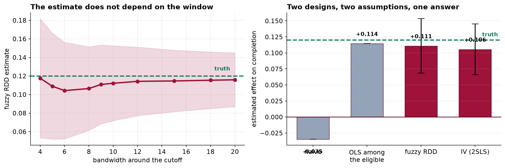

Capstone 23 ended with an estimate nobody should trust, because adjustment can only remove the confounding you measured. This chapter takes the opposite route: stop trying to measure the confounding, and find a piece of variation that never had any.
- Setting
- A state scholarship for students in financial need. Eighty thousand registry records with a means-tested need index, an eligibility cutoff at exactly 60, whether the student actually received the award, the scholarship places allocated to their high school, and whether they completed a degree.
- The question
- Does receiving the scholarship raise a student's chance of completing a degree?
- Why it matters
- The program is up for reauthorization. The comparison anyone would make first says recipients complete at a lower rate, which reads as evidence that the scholarship harms the students it is meant to help.
- What we do
- Build two designs on the same question. One exploits the arbitrariness of the eligibility cutoff; the other exploits an allocation formula that runs on enrollment counts three years stale. Test everything each design allows us to test, state plainly what neither can test, and compare the answers.
The naive comparison is −3.5 points, on the wrong side of zero. The fuzzy regression discontinuity gives +11.1 points, 95% CI [+6.8, +15.3]. Instrumental variables gives +10.6 points, 95% CI [+6.6, +14.5]. The truth is +12.0, and the two designs rest on assumptions that have nothing to do with each other.
The Comparison With the Wrong Sign
After deduplication and removing the records where the need index was never assessed, 79,666 students remain. The obvious thing to do with them is the wrong thing.
This is worse than an understatement. The scholarship is means tested, so it goes to students from poorer families, and family circumstances predict completion through routes nobody records. A report quoting that difference would conclude that giving money to students in need makes them less likely to graduate.
Capstone 23 showed what happens if you respond by adjusting for the routes you can see and hoping about the rest. Both designs here refuse that trade. Neither of them assumes that the measured covariates capture selection, because neither of them uses the measured covariates for that purpose at all.
Design A: the Cutoff
Eligibility is a deterministic function of the need index: eligible at 60.0 or above, not eligible below. A student at 59.9 and a student at 60.1 are, in every respect anyone cares about, the same student. One of them is offered a scholarship, and the reason is a number somebody chose.
That arbitrariness is the whole design. Whatever unmeasured differences exist between high-need and low-need students, those differences change smoothly as the need index rises. Eligibility changes discontinuously. Anything that jumps at 60 is therefore attributable to the rule.
The Two Things an RDD Can Actually Test
First, no manipulation. If families could nudge the index across the line, the students on either side stop being comparable. The signature is a jump in the density of the running variable: a pile-up just above the cutoff and a hole just below.
Second, covariate smoothness. Anything measured before the scholarship should be continuous at the cutoff. A pre-treatment characteristic that jumps at 60 means something other than the rule changes there.
| Check | Result | Reading |
|---|---|---|
| Density at the cutoff | 749.8 below, 727.1 above per 0.5-point bin; z = −0.59 | No sorting across the line |
| Family income | Jump −0.28 thousand dollars, SE 0.17, z = −1.63 | Smooth |
| School allocation | Jump −0.14 places, SE 0.11, z = −1.23 | Smooth |
All three pass, and it is worth being precise about what that means. These checks cannot prove the design works. They can only fail to find evidence that it does not. That is the most any assumption check has ever offered, in this chapter or any other, and a study that reports them as proof is overstating them.
The density result is also substantively reassuring here: the index is computed by an agency from submitted documents rather than self-reported, which is exactly the circumstance in which manipulation is hard. Where a running variable is self-reported, or where the threshold is public and the stakes are high, this check frequently fails, and a failed density test is usually the end of the design rather than something to correct.
The Discontinuity, and Why It Has to Be Rescaled
Being eligible is not the same as receiving. Take-up among the eligible is 62 percent, so the jump in completion at the cutoff measures the effect of being offered the scholarship. That is an intention to treat, and it is a perfectly good quantity, just not the one the question asked for.
Dividing the outcome jump by the take-up jump rescales the estimate from "offered" to "received". This is the Wald ratio, and it is worth noticing what it is: a fuzzy RDD is an instrumental variables estimator in which the instrument is crossing the threshold. The two designs in this chapter are more closely related than their names suggest, which makes it all the more important that their assumptions are different.
![Left: share completing a degree against the need index centered on the cutoff. Points fall in one-point bins, gray to the left of the cutoff and dark red to the right, with a straight line fitted on each side. Both lines slope downward, and the right-hand line starts about 0.069 above where the left-hand line ends, annotated jump = plus 0.069. Right: the same axis showing the share receiving the scholarship, which is exactly zero everywhere below the cutoff and about 0.63 everywhere above, annotated take-up jumps 0.63, not 1.00.](../assets/img/capstone-rdd-jump.png)
A bandwidth is a researcher's choice, so the honest report is a range rather than the one that looked best. Here the estimate runs from +10.4 to +11.6 points across a fourfold change in window width, and every interval contains the truth. That stability is part of the evidence.
| Bandwidth | Students in the window | Fuzzy estimate | 95% CI |
|---|---|---|---|
| ±5 | 14,599 | +0.1089 | [+0.052, +0.166] |
| ±6 | 17,405 | +0.1043 | [+0.052, +0.156] |
| ±9 (reported) | 25,676 | +0.1109 | [+0.068, +0.153] |
| ±12 | 33,580 | +0.1142 | [+0.077, +0.151] |
| ±20 | 51,519 | +0.1159 | [+0.087, +0.145] |
Notice the sample sizes. There are 79,666 students in this registry, and the reported estimate uses 25,676 of them, with the ones nearest the cutoff weighted most heavily. An RDD buys its credibility by throwing away most of the data, and the price shows up in the interval, which is more than four points wide. That is a real trade and it should be made deliberately rather than discovered afterwards.
Design B: the Instrument
The second design uses different variation entirely. Scholarship places are allocated to high schools by a formula that runs on enrollment counts three years out of date. Two otherwise identical schools can therefore have quite different allocations, for reasons that have nothing to do with this year's students, and a student at a well-allocated school is more likely to end up with a scholarship.
The analysis is restricted to eligible students, since only they can receive the award.
| Quintile of the school's allocation | Students | Take-up |
|---|---|---|
| Lowest (2.0 to 8.5 places per 100) | 5,629 | 0.418 |
| Second (8.5 to 10.8) | 5,714 | 0.546 |
| Middle (10.8 to 13.1) | 5,500 | 0.612 |
| Fourth (13.1 to 15.3) | 5,644 | 0.709 |
| Highest (15.3 to 24.9) | 5,513 | 0.820 |
Take-up doubles from the least to the most generously allocated schools. That is the variation the design is going to use, and the reason it is usable is that nothing about it was chosen by, or for, the students.
Three Assumptions, and Only One of Them Testable
| Assumption | Testable? | Status here |
|---|---|---|
| Relevance: the instrument moves treatment | Yes | First-stage F = 2,685. An extra place per 100 students raises the chance of receiving by 3.5 points |
| Monotonicity: more places never makes receipt less likely | Partially | Take-up rises across every quintile, which is consistent with it |
| Exclusion: the allocation affects completion only through receipt | No | An argument, not a result |
The first-stage F is 269 times the conventional threshold of 10, which settles relevance and nothing else. A strong first stage is frequently presented as though it validated the instrument. It does not. It establishes that the instrument moves the treatment, which is the easy part.
The exclusion restriction is where an IV study is attacked, and it should be. The argument here is that the formula uses enrollment counts three years stale, so the allocation carries no information about this year's cohort. The obvious objection is that a school's enrollment three years ago might proxy for something about the neighborhood that also affects completion. The honest response has three parts: state the objection, note that the covariate check found the allocation smooth at the cutoff and unrelated to family income, and concede that the assumption cannot be proved. An IV paper that does not do all three is hiding something.
The IV Estimate, and What LATE Means
The last chip deserves attention rather than a footnote. Ordinary least squares restricted to the eligible sample gives +11.5 points, which is also close to the truth. That is not luck: within the eligible group, who actually received a scholarship was largely determined by their school's allocation, which is as good as random. Restricting to the eligible removed most of the confounding by itself.
It would be easy to present the IV as having rescued an analysis that a simple subgroup comparison would have handled. The IV's contribution is that it does not depend on that being true. Had take-up among the eligible been driven by how motivated a student was, rather than by an administrative formula, OLS on the eligible would have been badly biased in exactly the way Capstone 23 was, and the IV would still have worked.
Both estimates are also local, and to different localities. The RDD estimates the effect for students near a need index of 60. The IV estimates a local average treatment effect: the effect for students whose receipt was actually shifted by their school's allocation, sometimes called the compliers. Neither is the effect for the average recipient, and neither speaks directly to what would happen if eligibility were widened. Reporting either as "the effect of the scholarship" overstates what was learned.
Why This Agreement Counts and the Last One Did Not
Capstone 23 got +1.67 from matching and +1.65 from weighting, and that agreement was worth nothing. Both rested on the same untestable assumption, so they were confounded identically and failed together. This is a different situation, and the difference is worth stating precisely.
| Estimator | Estimate | 95% CI | Rests on |
|---|---|---|---|
| Naive comparison | −0.0347 | — | No unmeasured confounding, across everyone |
| OLS among the eligible | +0.1145 | — | No unmeasured confounding, within the eligible |
| Fuzzy RDD | +0.1109 | [+0.068, +0.153] | Nothing else jumps at need = 60 |
| Instrumental variables | +0.1055 | [+0.066, +0.145] | The allocation affects completion only via receipt |
| The truth | +0.1200 | — | — |
Read the last column. The RDD assumes that nothing except eligibility changes discontinuously at 60. The IV assumes that a stale funding formula affects completion only by changing who gets a scholarship. Neither assumption implies the other, and neither implies unconfoundedness. They could both be wrong, but they would have to be wrong in unrelated ways and by coincidentally similar amounts. That is what turns two numbers landing near each other into evidence rather than into a coincidence you were hoping for.

What to Watch
- ✓State each design's assumption in a sentence a policy reader can object to. "Nothing else changes at 60" and "a stale formula affects completion only through receipt" can be argued with. An equation cannot.
- ✓A strong first stage validates relevance and nothing else. An F of 2,685 says the instrument moves the treatment. It says nothing whatever about exclusion.
- ✓Report a bandwidth range, not the best one. The range is the honest summary; a single number is a choice the reader cannot see.
- ✓Assumption checks can only fail to find a problem. A smooth density and smooth covariates are consistent with a valid design and do not establish one.
- ✓Do not report a LATE as a program evaluation. If the question is whether to widen eligibility, the relevant population is students who would newly qualify, and neither design here speaks to them.
- ✓A cutoff is a real boundary for real people. Students at 59.9 were refused what students at 60.1 received, and the analysis depends on that being arbitrary. A rule that is analytically convenient is, for the people just below it, hard to justify.
- ✓The instrument is itself a finding. That a three-year-stale formula determined who received a scholarship is a policy result, and arguably a more actionable one than the effect estimate.
Natural Experiments in Data Science & AI
| Where it appears | The cutoff or the instrument |
|---|---|
| Credit and lending models | Score thresholds for approval are textbook RDDs, and are how the causal effect of credit access gets measured at all |
| Recommender and ranking systems | The boundary of a top-N list: item 10 is shown and item 11 is not, for a reason that is arbitrary at the margin |
| Encouragement designs | Randomizing an invitation rather than the treatment, then instrumenting take-up with the invitation. A fuzzy RDD with a designed instrument |
| Ad auctions and bidding | Winning an auction at the margin is as good as random, which turns logged auctions into a discontinuity design |
| Platform policy changes | Eligibility thresholds for a feature, a badge or a tier, applied by rule and therefore exploitable |
Regression discontinuity comes from Thistlethwaite and Campbell in 1960 and then sat almost unused for forty years before economists rediscovered it. The modern practice is mostly about the bandwidth: Imbens and Kalyanaraman and later Calonico, Cattaneo and Titiunik give data-driven choices with bias-corrected intervals, which is what a current paper reports instead of the hand-picked range used here for transparency. On the IV side, the local average treatment effect framework of Imbens and Angrist is what makes the complier interpretation precise, and the weak-instrument literature explains why an F of 10 became a rule of thumb and why it is not a good one. Both designs now have machine-learning extensions for heterogeneous effects, and every one of them inherits the same untestable assumption unchanged.
Part XXIX in four capstones
- Designing an A/B Test Properly designed the experiment and then looked at it too early: peeking turned a 5 percent error rate into 18.7 percent.
- Designing a Factorial Experiment designed it too cheaply: a resolution III design reported an interaction under a main effect's name.
- Propensity Scores: Matching and Weighting could not design at all, and found that balancing every measured covariate removed nine percent of the bias.
- This chapter stopped trying to measure the confounding and used variation that never had any, recovering an effect the obvious comparison got backwards.
The full project, step by step
The companion notebook reads the plan, produces the naive comparison with the wrong sign, runs the density and covariate checks the RDD allows, implements local linear regression with a triangular kernel and robust standard errors from scratch, rescales the intention to treat by the take-up jump, sweeps the bandwidth, fits the first stage and 2SLS by hand, and closes by comparing two designs that fail in unrelated ways.
The dataset
(capstone-regression-discontinuity-and-iv.xlsx) holds 80,900 registry records with their
duplicates, undeclared incomes and need-index sentinels intact, the analysis plan written before the
completion data were linked in, and the true effect so both designs can be scored. Two written reports
accompany it: a plain-language brief for the program director facing reauthorization, and a
technical report covering both designs and their assumptions.
🎓 Key Takeaways
- ✓The naive comparison had the wrong sign. Recipients completed 3.5 points less often than non-recipients, and the scholarship raises completion by 12.
- ✓A natural experiment does not adjust for confounding, it sidesteps it. An arbitrary cutoff and a stale formula both produce variation unrelated to the student.
- ✓Eligibility is not receipt. Take-up jumped 0.626 at the cutoff, so the 6.94-point intention to treat rescales to a fuzzy estimate of +11.1.
- ✓Relevance is testable and exclusion is not. An F of 2,685 settles the easy assumption and leaves the hard one exactly where it was.
- ✓Two designs agreeing is evidence when they do not share an assumption. +11.1 and +10.6, resting on unrelated claims, against a truth of +12.0.